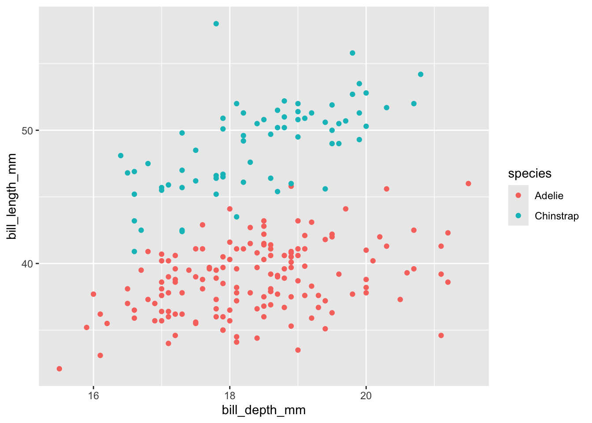
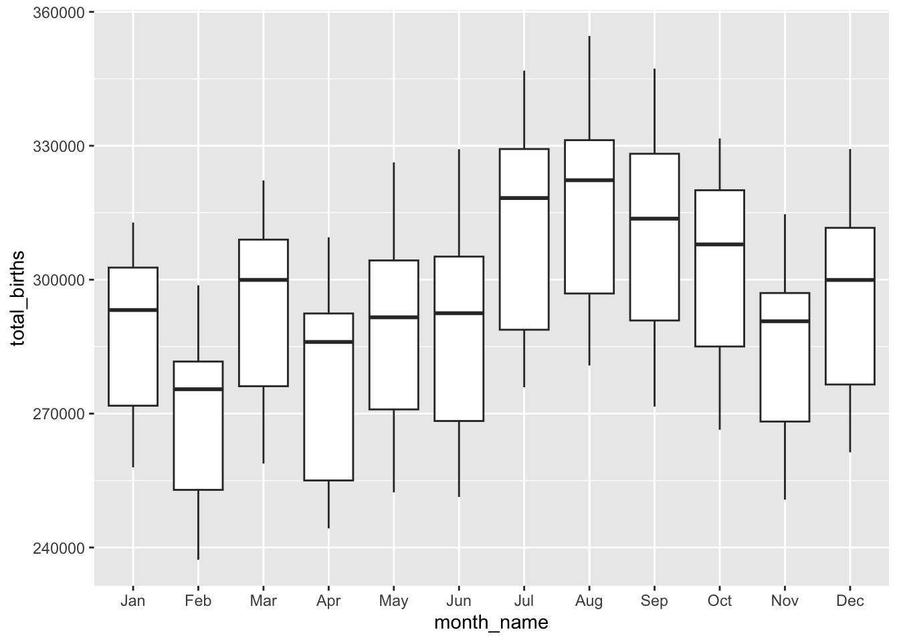

Dates
Same Verbs, New Tricks
✏️ Filter with %in%
Recall the “logical comparison operators” we can use to filter() our data:
| symbol | meaning |
|---|---|
== |
equal to |
!= |
not equal to |
> |
greater than |
>= |
greater than or equal to |
< |
less than |
<= |
less than or equal to |
%in% c(???, ???) |
a list of multiple values |
To comment/uncomment several lines of code at once, highlight them then click ctrl/cmd+shift+c.
✏️ Filter with !=
✏️ Explore Missing Data
Notice that some of our penguins have missing (NA) data on some values:
# A tibble: 6 × 8
species island bill_length_mm bill_depth_mm flipper_length_mm body_mass_g
<chr> <chr> <dbl> <dbl> <dbl> <dbl>
1 Adelie Torgersen 39.1 18.7 181 3750
2 Adelie Torgersen 39.5 17.4 186 3800
3 Adelie Torgersen 40.3 18 195 3250
4 Adelie Torgersen NA NA NA NA
5 Adelie Torgersen 36.7 19.3 193 3450
6 Adelie Torgersen 39.3 20.6 190 3650
# ℹ 2 more variables: sex <chr>, year <dbl>NA Values
There are many ways to handle missing data. The right approach depends upon your research goals. A general rule is: Only get rid of observations with missing data if they’re missing data on variables you need for the specific task at hand!
Example 1
Suppose our research focus is just on body_mass_g. Two penguins are missing this info:
# A tibble: 1 × 1
`sum(is.na(body_mass_g))`
<int>
1 2Let’s define a new dataset that removes these penguins:
Code
[1] 342[1] 344Note that some penguins in penguins_w_body_mass are missing info on sex, but we don’t care since that’s not related to our research question:
# A tibble: 1 × 1
`sum(is.na(sex))`
<int>
1 9Example 2
In the very rare case that we need complete information on every variable for the specific task at hand, we can use na.omit() to get rid of any penguin that’s missing info on any variable:
How many penguins did this eliminate?
✏️ Explain na.omit() Risk
Explain why we should only use na.omit() in extreme circumstances.
It gets rid of some of the important observations just because there is a missing data point on a variable we don’t need.
✏️ Drop Year & Island
Being able to select() only certain columns can help simplify our data. This is especially important when we’re working with lots of columns (which we haven’t done yet). It can also get tedious to type out every column of interest. Here are some shortcuts:
-
-removes a given variable and keeps all others (e.g.select(-island)) -
starts_with("___"),ends_with("___"), orcontains("___")selects only the columns that either start with, end with, or simply contain the given string of characters
Use these shortcuts to create the following datasets.
[1] "species" "island" "bill_length_mm"
[4] "bill_depth_mm" "flipper_length_mm" "body_mass_g"
[7] "sex" "year" Use a shortcut to keep everything but the year and island variables.
# A tibble: 344 × 6
species bill_length_mm bill_depth_mm flipper_length_mm body_mass_g sex
<chr> <dbl> <dbl> <dbl> <dbl> <chr>
1 Adelie 39.1 18.7 181 3750 male
2 Adelie 39.5 17.4 186 3800 female
3 Adelie 40.3 18 195 3250 female
4 Adelie NA NA NA NA <NA>
5 Adelie 36.7 19.3 193 3450 female
6 Adelie 39.3 20.6 190 3650 male
7 Adelie 38.9 17.8 181 3625 female
8 Adelie 39.2 19.6 195 4675 male
9 Adelie 34.1 18.1 193 3475 <NA>
10 Adelie 42 20.2 190 4250 <NA>
# ℹ 334 more rows✏️ Keep mm Measurements
Use a shortcut to keep only species and the penguin characteristics measured in mm.
# A tibble: 344 × 4
species bill_length_mm bill_depth_mm flipper_length_mm
<chr> <dbl> <dbl> <dbl>
1 Adelie 39.1 18.7 181
2 Adelie 39.5 17.4 186
3 Adelie 40.3 18 195
4 Adelie NA NA NA
5 Adelie 36.7 19.3 193
6 Adelie 39.3 20.6 190
7 Adelie 38.9 17.8 181
8 Adelie 39.2 19.6 195
9 Adelie 34.1 18.1 193
10 Adelie 42 20.2 190
# ℹ 334 more rows✏️ Keep Bill Measurements
Use a shortcut to keep only species and bill-related measurements.
# A tibble: 344 × 3
species bill_length_mm bill_depth_mm
<chr> <dbl> <dbl>
1 Adelie 39.1 18.7
2 Adelie 39.5 17.4
3 Adelie 40.3 18
4 Adelie NA NA
5 Adelie 36.7 19.3
6 Adelie 39.3 20.6
7 Adelie 38.9 17.8
8 Adelie 39.2 19.6
9 Adelie 34.1 18.1
10 Adelie 42 20.2
# ℹ 334 more rows✏️ Keep Length Measurements
Use a shortcut to keep only species and the length-related characteristics.
# A tibble: 344 × 3
species bill_length_mm flipper_length_mm
<chr> <dbl> <dbl>
1 Adelie 39.1 181
2 Adelie 39.5 186
3 Adelie 40.3 195
4 Adelie NA NA
5 Adelie 36.7 193
6 Adelie 39.3 190
7 Adelie 38.9 181
8 Adelie 39.2 195
9 Adelie 34.1 193
10 Adelie 42 190
# ℹ 334 more rows✏️ Arrange by 2 Variables
We’ve done examples where we need to filter() by more than one variable, or select() more than one variable. Use your intuition for how we can arrange(), count(), and group_by() more than one variable.
Code
# A tibble: 6 × 8
species island bill_length_mm bill_depth_mm flipper_length_mm body_mass_g
<chr> <chr> <dbl> <dbl> <dbl> <dbl>
1 Adelie Biscoe 37.8 18.3 174 3400
2 Adelie Biscoe 37.7 18.7 180 3600
3 Adelie Biscoe 35.9 19.2 189 3800
4 Adelie Biscoe 38.2 18.1 185 3950
5 Adelie Biscoe 38.8 17.2 180 3800
6 Adelie Biscoe 35.3 18.9 187 3800
# ℹ 2 more variables: sex <chr>, year <dbl>✏️ Count by 2 Variables
Code
# A tibble: 8 × 3
# Groups: sex [3]
sex species n
<chr> <chr> <int>
1 female Adelie 73
2 female Chinstrap 34
3 female Gentoo 58
4 male Adelie 73
5 male Chinstrap 34
6 male Gentoo 61
7 <NA> Adelie 6
8 <NA> Gentoo 5✏️ Group by 2 Variables
Code
# A tibble: 8 × 3
# Groups: species [3]
species sex mean
<chr> <chr> <dbl>
1 Adelie female 3369.
2 Adelie male 4043.
3 Adelie <NA> 3540
4 Chinstrap female 3527.
5 Chinstrap male 3939.
6 Gentoo female 4680.
7 Gentoo male 5485.
8 Gentoo <NA> 4588.✏️ Work with Dates
Before some wrangling practice, let’s explore another important concept: working with or mutating date variables. Dates are a whole special object type or class in R that automatically respect the order of time.
[1] "2026-10-28"Code
[1] "Date"The lubridate package inside tidyverse contains functions that can extract various information from dates. Let’s learn about some of the most common functions by applying them to today. For each, make a comment on what the function does.
Code
[1] 10[1] Oct
12 Levels: Jan < Feb < Mar < Apr < May < Jun < Jul < Aug < Sep < ... < Dec[1] 28[1] 301[1] 4[1] Wed
Levels: Sun < Mon < Tue < Wed < Thu < Fri < SatCode
[1] TRUE[1] FALSEApplication
The remaining exercises are similar to some of those on the homework. Hence, the solutions are not provided. Let’s apply these ideas to the daily Birthdays dataset in the mosaic package.
state year month day date wday births
1 AK 1969 1 1 1969-01-01 Wed 14
2 AL 1969 1 1 1969-01-01 Wed 174
3 AR 1969 1 1 1969-01-01 Wed 78
4 AZ 1969 1 1 1969-01-01 Wed 84
5 CA 1969 1 1 1969-01-01 Wed 824
6 CO 1969 1 1 1969-01-01 Wed 100Birthdays gives the number of births recorded on each day of the year in each state from 1969 to 19881. We can use our wrangling skills to understand some drivers of daily births. Putting these all together can be challenging! Remember the following ways to make tasks more manageable:
- Translate the prompt into our 6 verbs (and
count()). That is, think before you type. - Build your code line by line. It’s important to understand what’s being piped into each function!
✏️ Count Days per State
How many days of data do we have for each state?
state n
1 AK 7306
2 AL 7312
3 AR 7310
4 AZ 7310
5 CA 7325
6 CO 7305
7 CT 7312
8 DC 7311
9 DE 7307
10 FL 7307
11 GA 7314
12 HI 7306
13 IA 7306
14 ID 7306
15 IL 7314
16 IN 7311
17 KS 7311
18 KY 7313
19 LA 7309
20 MA 7315
21 MD 7311
22 ME 7309
23 MI 7323
24 MN 7315
25 MO 7309
26 MS 7310
27 MT 7305
28 NC 7307
29 ND 7305
30 NE 7305
31 NH 7308
32 NJ 7321
33 NM 7308
34 NV 7307
35 NY 7333
36 OH 7319
37 OK 7306
38 OR 7307
39 PA 7330
40 RI 7305
41 SC 7314
42 SD 7305
43 TN 7308
44 TX 7330
45 UT 7307
46 VA 7310
47 VT 7305
48 WA 7306
49 WI 7311
50 WV 7310
51 WY 7305✏️ Total Births
How many total births were there in this time period?
✏️ Total Births per State
How many total births were there per state in this time period, sorted from low to high?
✏️ Build daily_births
Create a new dataset named daily_births that includes the total number of births per day (across all states) and the corresponding day of the week, eg, Mon. NOTE: Name the column with total births so that it’s easier to wrangle and plot.
✏️ Plot Daily Births
Using this data, construct a plot of births over time, indicating the day of week.
✏️ Plot Monthly Births
For each prompt below, you can decide whether you want to: (1) wrangle and store data, then plot; or (2) wrangle data and pipe directly into ggplot. For example:
Code

Calculate the total number of births in each month and year, eg, Jan 1969, Feb 1969, …. Label month by names not numbers, eg, Jan not 1. Then, plot the births by month and comment on what you learn.
Code
monthly_births <- Birthdays |>
group_by(year, month) |>
summarize(total_births = sum(births)) |>
mutate(month_name = factor(month.abb[month], levels = month.abb),
month_year = paste(month_name, year)) |>
arrange(year, month)
ggplot(monthly_births, aes(x = month_name, y = total_births)) +
geom_boxplot()
✏️ Plot Weekly Births by State
In 1988, calculate the total number of births per week in each state. Get rid of week “53”, which isn’t a complete week! Then, make a line plot of births by week for each state and comment on what you learn. For example, do you notice any seasonal trends? Are these the same in every state? Any outliers?
✏️ Compare MN & LA
Repeat the above for just Minnesota (MN) and Louisiana (LA). MN has one of the coldest climates and LA has one of the warmest. How do their seasonal trends compare? Do you think these trends are similar in other colder and warmer states? Try it!
✏️ Sort MA Births
Create a dataset with only births in Massachusetts (MA) in 1979 and sort the days from those with the most births to those with the fewest.
Code
state year month day date wday births
1 MA 1979 9 28 1979-09-28 Fri 262
2 MA 1979 9 11 1979-09-11 Tues 252
3 MA 1979 12 28 1979-12-28 Fri 249
4 MA 1979 9 26 1979-09-26 Wed 246
5 MA 1979 7 24 1979-07-24 Tues 245
6 MA 1979 4 27 1979-04-27 Fri 243✏️ Find Top 5 States
Make a table showing the five states with the most births between September 9, 1979 and September 12, 1979, including the 9th and 12th. Arrange the table in descending order of births.
state year month day date wday births
1 CA 1979 9 12 1979-09-12 Wed 1176
2 CA 1979 9 11 1979-09-11 Tues 1170
3 CA 1979 9 10 1979-09-10 Mon 1108
4 CA 1979 9 9 1979-09-09 Sun 968
5 TX 1979 9 11 1979-09-11 Tues 845
6 TX 1979 9 10 1979-09-10 Mon 818
7 TX 1979 9 12 1979-09-12 Wed 804
8 TX 1979 9 9 1979-09-09 Sun 684
9 NY 1979 9 11 1979-09-11 Tues 682
10 NY 1979 9 12 1979-09-12 Wed 678
11 NY 1979 9 10 1979-09-10 Mon 676
12 IL 1979 9 11 1979-09-11 Tues 619
13 NY 1979 9 9 1979-09-09 Sun 585
14 IL 1979 9 10 1979-09-10 Mon 577
15 IL 1979 9 12 1979-09-12 Wed 562
16 OH 1979 9 12 1979-09-12 Wed 530
17 OH 1979 9 11 1979-09-11 Tues 522
18 PA 1979 9 12 1979-09-12 Wed 505
19 PA 1979 9 11 1979-09-11 Tues 487
20 IL 1979 9 9 1979-09-09 Sun 477
21 OH 1979 9 10 1979-09-10 Mon 475
22 PA 1979 9 10 1979-09-10 Mon 469
23 MI 1979 9 11 1979-09-11 Tues 445
24 MI 1979 9 12 1979-09-12 Wed 415
25 OH 1979 9 9 1979-09-09 Sun 411
26 MI 1979 9 9 1979-09-09 Sun 399
27 MI 1979 9 10 1979-09-10 Mon 392
28 PA 1979 9 9 1979-09-09 Sun 369
29 FL 1979 9 12 1979-09-12 Wed 363
30 FL 1979 9 11 1979-09-11 Tues 359
31 FL 1979 9 10 1979-09-10 Mon 357
32 FL 1979 9 9 1979-09-09 Sun 327
33 GA 1979 9 11 1979-09-11 Tues 320
34 NC 1979 9 10 1979-09-10 Mon 318
35 GA 1979 9 12 1979-09-12 Wed 310
36 NJ 1979 9 11 1979-09-11 Tues 307
37 NC 1979 9 12 1979-09-12 Wed 280
38 LA 1979 9 12 1979-09-12 Wed 275
39 MO 1979 9 10 1979-09-10 Mon 274
40 NJ 1979 9 10 1979-09-10 Mon 274
41 VA 1979 9 11 1979-09-11 Tues 272
42 LA 1979 9 11 1979-09-11 Tues 271
43 GA 1979 9 10 1979-09-10 Mon 270
44 IN 1979 9 11 1979-09-11 Tues 270
45 IN 1979 9 10 1979-09-10 Mon 266
46 MO 1979 9 11 1979-09-11 Tues 265
47 LA 1979 9 10 1979-09-10 Mon 259
48 NJ 1979 9 12 1979-09-12 Wed 259
49 MA 1979 9 11 1979-09-11 Tues 252
50 NC 1979 9 11 1979-09-11 Tues 247
51 TN 1979 9 11 1979-09-11 Tues 246
52 MO 1979 9 12 1979-09-12 Wed 246
53 IN 1979 9 12 1979-09-12 Wed 244
54 GA 1979 9 9 1979-09-09 Sun 238
55 NJ 1979 9 9 1979-09-09 Sun 233
56 TN 1979 9 10 1979-09-10 Mon 230
57 IN 1979 9 9 1979-09-09 Sun 228
58 WI 1979 9 11 1979-09-11 Tues 228
59 MA 1979 9 10 1979-09-10 Mon 220
60 VA 1979 9 10 1979-09-10 Mon 220
61 VA 1979 9 12 1979-09-12 Wed 220
62 MN 1979 9 10 1979-09-10 Mon 215
63 WI 1979 9 10 1979-09-10 Mon 215
64 WI 1979 9 12 1979-09-12 Wed 214
65 NC 1979 9 9 1979-09-09 Sun 211
66 LA 1979 9 9 1979-09-09 Sun 208
67 MN 1979 9 11 1979-09-11 Tues 205
68 KY 1979 9 11 1979-09-11 Tues 201
69 MO 1979 9 9 1979-09-09 Sun 199
70 AL 1979 9 12 1979-09-12 Wed 199
71 MN 1979 9 12 1979-09-12 Wed 199
72 VA 1979 9 9 1979-09-09 Sun 198
73 AL 1979 9 11 1979-09-11 Tues 195
74 MA 1979 9 12 1979-09-12 Wed 194
75 MA 1979 9 9 1979-09-09 Sun 193
76 TN 1979 9 12 1979-09-12 Wed 192
77 KY 1979 9 10 1979-09-10 Mon 191
78 AL 1979 9 10 1979-09-10 Mon 184
79 WA 1979 9 12 1979-09-12 Wed 182
80 KY 1979 9 12 1979-09-12 Wed 180
81 MN 1979 9 9 1979-09-09 Sun 177
82 TN 1979 9 9 1979-09-09 Sun 177
83 WA 1979 9 11 1979-09-11 Tues 175
84 WA 1979 9 10 1979-09-10 Mon 167
85 IA 1979 9 11 1979-09-11 Tues 167
86 WI 1979 9 9 1979-09-09 Sun 164
87 MS 1979 9 10 1979-09-10 Mon 161
88 OK 1979 9 12 1979-09-12 Wed 161
89 AL 1979 9 9 1979-09-09 Sun 160
90 AZ 1979 9 10 1979-09-10 Mon 158
91 OK 1979 9 10 1979-09-10 Mon 157
92 OK 1979 9 11 1979-09-11 Tues 157
93 WA 1979 9 9 1979-09-09 Sun 155
94 MD 1979 9 11 1979-09-11 Tues 152
95 SC 1979 9 11 1979-09-11 Tues 151
96 AZ 1979 9 12 1979-09-12 Wed 150
97 CO 1979 9 12 1979-09-12 Wed 150
98 SC 1979 9 12 1979-09-12 Wed 149
99 MD 1979 9 10 1979-09-10 Mon 148
100 AZ 1979 9 11 1979-09-11 Tues 148
101 MS 1979 9 11 1979-09-11 Tues 148
102 CO 1979 9 10 1979-09-10 Mon 144
103 MD 1979 9 12 1979-09-12 Wed 144
104 OR 1979 9 12 1979-09-12 Wed 144
105 CO 1979 9 9 1979-09-09 Sun 143
106 KY 1979 9 9 1979-09-09 Sun 143
107 UT 1979 9 12 1979-09-12 Wed 141
108 SC 1979 9 10 1979-09-10 Mon 138
109 CO 1979 9 11 1979-09-11 Tues 137
110 IA 1979 9 12 1979-09-12 Wed 137
111 IA 1979 9 10 1979-09-10 Mon 134
112 MD 1979 9 9 1979-09-09 Sun 131
113 UT 1979 9 9 1979-09-09 Sun 130
114 UT 1979 9 10 1979-09-10 Mon 130
115 AR 1979 9 11 1979-09-11 Tues 128
116 OR 1979 9 11 1979-09-11 Tues 128
117 SC 1979 9 9 1979-09-09 Sun 126
118 OK 1979 9 9 1979-09-09 Sun 125
119 AZ 1979 9 9 1979-09-09 Sun 124
120 MS 1979 9 12 1979-09-12 Wed 124
121 KS 1979 9 11 1979-09-11 Tues 123
122 MS 1979 9 9 1979-09-09 Sun 122
123 UT 1979 9 11 1979-09-11 Tues 122
124 CT 1979 9 11 1979-09-11 Tues 119
125 AR 1979 9 12 1979-09-12 Wed 118
126 CT 1979 9 10 1979-09-10 Mon 111
127 IA 1979 9 9 1979-09-09 Sun 110
128 OR 1979 9 10 1979-09-10 Mon 110
129 KS 1979 9 10 1979-09-10 Mon 105
130 WV 1979 9 12 1979-09-12 Wed 104
131 WV 1979 9 10 1979-09-10 Mon 103
132 CT 1979 9 12 1979-09-12 Wed 102
133 OR 1979 9 9 1979-09-09 Sun 99
134 KS 1979 9 12 1979-09-12 Wed 98
135 KS 1979 9 9 1979-09-09 Sun 97
136 CT 1979 9 9 1979-09-09 Sun 94
137 AR 1979 9 10 1979-09-10 Mon 94
138 NE 1979 9 12 1979-09-12 Wed 94
139 WV 1979 9 11 1979-09-11 Tues 93
140 NE 1979 9 10 1979-09-10 Mon 80
141 NE 1979 9 11 1979-09-11 Tues 79
142 WV 1979 9 9 1979-09-09 Sun 78
143 NM 1979 9 10 1979-09-10 Mon 78
144 NM 1979 9 11 1979-09-11 Tues 78
145 AR 1979 9 9 1979-09-09 Sun 76
146 NM 1979 9 9 1979-09-09 Sun 70
147 NM 1979 9 12 1979-09-12 Wed 66
148 HI 1979 9 11 1979-09-11 Tues 64
149 NE 1979 9 9 1979-09-09 Sun 61
150 HI 1979 9 10 1979-09-10 Mon 61
151 DC 1979 9 9 1979-09-09 Sun 60
152 DC 1979 9 11 1979-09-11 Tues 60
153 ID 1979 9 11 1979-09-11 Tues 60
154 SD 1979 9 11 1979-09-11 Tues 58
155 RI 1979 9 10 1979-09-10 Mon 54
156 DC 1979 9 10 1979-09-10 Mon 52
157 MT 1979 9 10 1979-09-10 Mon 51
158 ME 1979 9 12 1979-09-12 Wed 51
159 ND 1979 9 10 1979-09-10 Mon 50
160 ID 1979 9 12 1979-09-12 Wed 50
161 ID 1979 9 9 1979-09-09 Sun 49
162 HI 1979 9 12 1979-09-12 Wed 48
163 DC 1979 9 12 1979-09-12 Wed 46
164 ID 1979 9 10 1979-09-10 Mon 45
165 ME 1979 9 11 1979-09-11 Tues 45
166 NV 1979 9 11 1979-09-11 Tues 44
167 RI 1979 9 11 1979-09-11 Tues 42
168 SD 1979 9 9 1979-09-09 Sun 38
169 SD 1979 9 10 1979-09-10 Mon 38
170 ME 1979 9 10 1979-09-10 Mon 37
171 ND 1979 9 9 1979-09-09 Sun 36
172 MT 1979 9 12 1979-09-12 Wed 36
173 NV 1979 9 12 1979-09-12 Wed 36
174 ME 1979 9 9 1979-09-09 Sun 35
175 WY 1979 9 9 1979-09-09 Sun 34
176 MT 1979 9 11 1979-09-11 Tues 34
177 MT 1979 9 9 1979-09-09 Sun 33
178 RI 1979 9 9 1979-09-09 Sun 33
179 NH 1979 9 10 1979-09-10 Mon 33
180 RI 1979 9 12 1979-09-12 Wed 33
181 NV 1979 9 9 1979-09-09 Sun 32
182 NV 1979 9 10 1979-09-10 Mon 32
183 ND 1979 9 11 1979-09-11 Tues 32
184 NH 1979 9 11 1979-09-11 Tues 32
185 DE 1979 9 12 1979-09-12 Wed 32
186 ND 1979 9 12 1979-09-12 Wed 32
187 SD 1979 9 12 1979-09-12 Wed 32
188 HI 1979 9 9 1979-09-09 Sun 31
189 AK 1979 9 11 1979-09-11 Tues 31
190 NH 1979 9 12 1979-09-12 Wed 31
191 NH 1979 9 9 1979-09-09 Sun 28
192 AK 1979 9 10 1979-09-10 Mon 28
193 DE 1979 9 10 1979-09-10 Mon 28
194 WY 1979 9 12 1979-09-12 Wed 28
195 AK 1979 9 9 1979-09-09 Sun 26
196 DE 1979 9 9 1979-09-09 Sun 26
197 DE 1979 9 11 1979-09-11 Tues 26
198 WY 1979 9 11 1979-09-11 Tues 24
199 WY 1979 9 10 1979-09-10 Mon 23
200 VT 1979 9 9 1979-09-09 Sun 19
201 VT 1979 9 10 1979-09-10 Mon 19
202 AK 1979 9 12 1979-09-12 Wed 19
203 VT 1979 9 11 1979-09-11 Tues 16
204 VT 1979 9 12 1979-09-12 Wed 15The
fivethirtyeightpackage has more recent data.↩︎